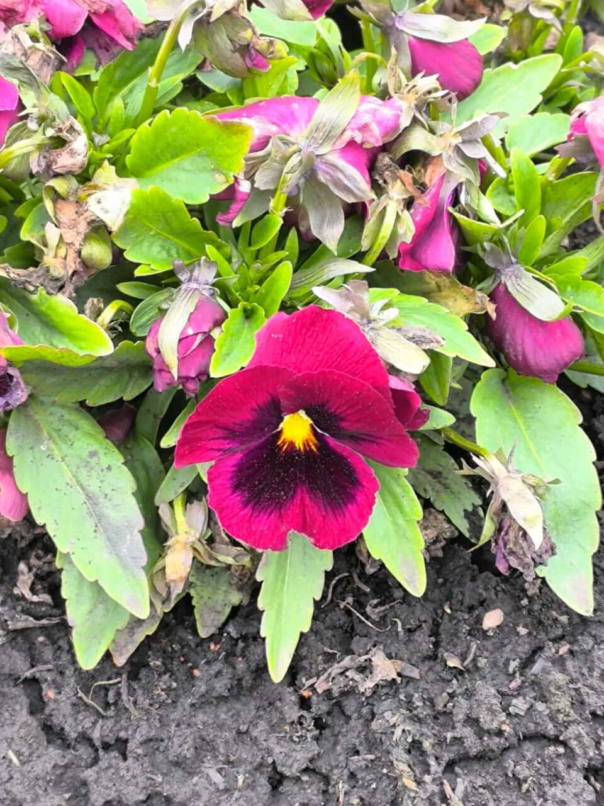

Фритрек и нулевой спринт: Подготовка к работе

хорошее начало
Это было самое начало пути. На этом этапе важно было проникнуться основами и настроиться на учёбу. И, возможно, подумать, как новые знания могут повлиять на ваше будущее.
Довольно отличное начало! В то время я думала, я знала html хорошо, в отличие от многих языков программирования